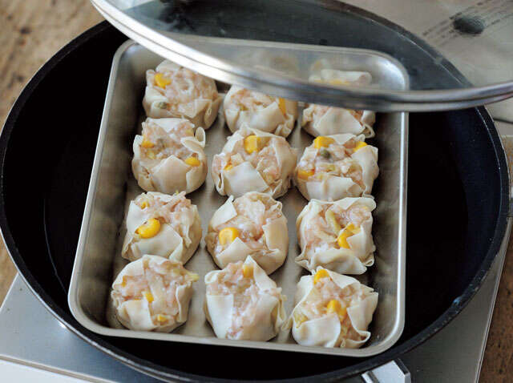

《乳酸白菜健康食谱，清除体内铁锈和毒素》 （监督：伊泽由美子 / 宝岛社）第 7 期【共 7 次】
随着年龄的增长，我们开始担心身体衰退、排便问题和免疫力下降。 “乳酸卷心菜”可能是缓解这种焦虑的一个安慰盟友。穆克《乳酸白菜健康食谱，清除体内铁锈和毒素》据宝岛社介绍，“乳酸白菜”的主要成分是卷心菜和盐。通过发酵的力量增加天然乳酸菌，接近肠道环境，有助于保持健康的节奏。对于那些想要永远保持青春的人来说，它肯定是一个可靠的资源，因为它有助于强健身体并保持健康的血管。拥有轻松维持的健康饮食习惯，过上充满活力的生活。
*本文部分摘录自井泽由美子（导师）的著作《乳酸白菜去除体内铁锈和毒素的健康食谱》。
就这样吃就足够美味了！ 「白菜烧麦」的调味料可根据自己的口味调整
高蛋白、低脂肪，非常适合增肌和节食
材料（2人份）
(A) 乳酸卷心菜（配正宗日本花椒）...1杯（150克）
(A) 鸡肉碎...100克
(A) 水煮扇贝罐头（扇贝）...30g
(A) 罐装全玉米....30g
(A) 胡椒粉、酱油…各一点
烧麦皮...12张
(B) 醋、黑胡椒、粳米、酱油...各适量，按个人喜好
如何制作
1．在一个碗里A添加并搅拌均匀直至变得粘稠。
2．摊开一张烧卖皮，1の1/12量をのせて包む。其余的也同样做。
3．2将它们放在大桶或耐热盘上，然后放入煎锅中。在缸下倒入2杯水（未列出），用中火加热，盖上锅盖，蒸6至8分钟，直至肉熟透。
IZAWA's POINT

通过将煎锅与蝙蝠或耐热盘相结合，您无需使用蒸锅即可轻松制作烧麦！如果你用耐热盘蒸，你就可以在餐桌上享用滚烫的食物。
4．取出来，放在碗里，随你喜欢。B添加。